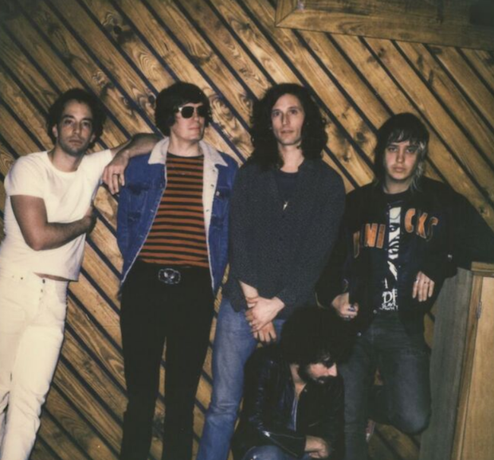
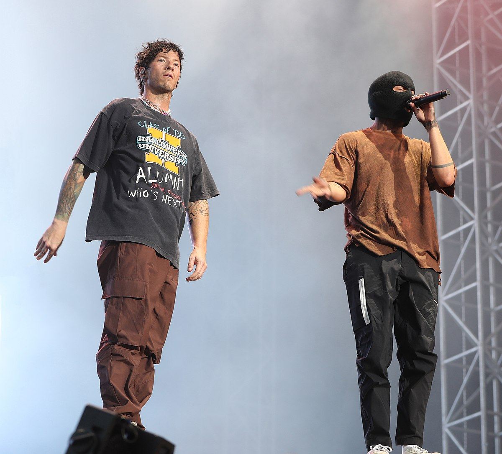
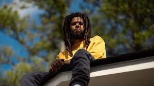

The Strokes

The Strokes es una banda de rock formada en Nueva York en 1998. Con su álbum debut Is This It en 2001, ayudaron a revivir el rock garage y post-punk en la escena musical de principios de los 2000. Son conocidos por su estilo crudo, riffs de guitarra pegajosos, y la voz distintiva de Julian Casablancas. Canciones como "Last Nite" y "Reptilia" los establecieron como una de las bandas más influyentes de su generación.
Twenty one pilots

Twenty One Pilots es un dúo musical de Columbus, Ohio, formado por Tyler Joseph y Josh Dun. Su música fusiona elementos de rock, pop, hip-hop, electrónica y reggae, creando un sonido único y distintivo. Alcanzaron la fama con el álbum Blurryface en 2015, que incluye éxitos como "Stressed Out" y "Ride". Su estilo lírico aborda temas como la ansiedad, la inseguridad y la búsqueda de identidad.
J Cole

J. Cole, cuyo nombre real es Jermaine Cole, es un rapero, compositor y productor estadounidense. Es conocido por sus letras introspectivas, su habilidad narrativa y su producción musical. Debutó con Cole World: The Sideline Story en 2011 y ha lanzado varios álbumes aclamados por la crítica, como 2014 Forest Hills Drive y KOD. J. Cole es también fundador del sello discográfico Dreamville Records y es apreciado por su enfoque consciente en el hip-hop.
Fred again..

Fred Again.., nombre artístico de Fred Gibson, es un productor musical, cantante y compositor británico. Es conocido por su innovador enfoque en la música electrónica y dance, combinando grabaciones de conversaciones y sonidos de la vida cotidiana con beats emotivos y letras introspectivas. Su serie de álbumes Actual Life ha sido aclamada por capturar la esencia de la experiencia humana, creando un sonido fresco y contemporáneo en la escena electrónica.
Arctic Monkeys